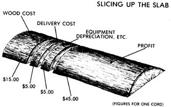

If you live anywhere with access to both rural and urban areas (and that means almost anywhere), a little hard work and ingenuity can set you up in your own $10-an-hour enterprise.
Wood's wood, no matter how you slice it.
- John Vivian
Anyone whose residence is within an easy commute of an area where the growl of chain saws is more common than the rumble of traffic, and near a medium to large city, likely can develop a profitable little fuelwood sales business . . . without owning a private woodlot, a large truck with a log boom, tree skidders, several chain saws, a log splitter, or most any of the other expensive tools normally associated with firewood harvesting and selling.
How? By purchasing large quantities of slabs from sawmills, then cutting them into stove-sized lengths and selling them to urbanand suburbanites for less than they'd have to pay for standard cordwood (and for a whole lot less than the costly "atmosphere fire" bundles sold in most large cities).
Mill slabs (also called mill ends or mill-end slabs, depending on where you live) are the one- to six-inch-thick slices of outer wood and bark that are sawn off in order to square a log before it can be sliced into boards. Since slabs accumulate quickly but have no real commercial value, most mills are happy to sell them on the cheap. Some sawyers even give slabs away when the scraps begin to clutter the mill yard.
Near my home in the Massachusetts Berkshires, a strapped bundle containing from half to three-quarters of a cord of slabs goes for $10. A logging-truck load that cuts up into about eight cords sells (delivered and stacked in your yard) for $110. And with cut, split, and aged log-style cordwood selling in nearby cities and towns for up to $100 per cord, there's a lot of income potential in each cord of those budget-priced slabs.
[EDITOR'S NOTE: Since a lot of MOM's readers don't live in the Berkshires, or even in the East, we asked our editorial man-about-the-West to check on slab prices in his part of the country. He reports that one sawmill located just outside his small southwestern Colorado town gets $25 a pickup-truck load for conifer slabs-primarily spruce-while a second mill 12 miles down the road asks $5 less for the same quantity. In both cases, buyers are allowed to drive off with as much as they can load onto a pickup truck-half-ton or three-quarter-even if the truck is equipped with sideboards to increase its load capacity.]
What's more, all the hard and dangerous work of felling, bucking, and skidding has already been done. Consequently, with just a standard pickup truck-or even a large car dragging a utility trailer-plus the willingness to do a lot of lifting and saw work, you can pick up, age, custom-cut, deliver, and stack slabs . . . sell them for less than conventional cordwood dealers get for four-foot lengths of green logs just dumped in the buyer's yard . . . and earn more money per hour while doing it!
You may have to convince people who aren't accustomed to burning mill slabs that the scraps are, indeed, a great bargain. I explain to potential customers that, like cordwood, mill slabs are economical-less than half the cost of an equivalent heating value in oil, gas, or electricity. Then I point out that since slabs are a by-product of the lumber industry, I can purchase, process, and sell them for substantially less than the price at which my competition can afford to peddle conventional cordwood.
Additional selling points include the fact that slabs are light in weight and flat on one side, and so are easier to carry and stack than cordwood. They can be split with a small hand ax (though splitting is seldom necessary). Their wide, sawn surfaces and thinness make for fast drying and quick fire-starting. And they're perfect for today's long-burning, airtight woodstoves; just a few lengths of slab an hour will fuel a small, free-draft (thus hot and correspondingly low in creosote) fire, with minimal waste.
And when it comes time to load the stove up to provide several hours of slow heat at a low draft setting, you can start with a roaring blaze for a few minutes before damping down for the night. This will drive most of any remaining efficiency-stealing moisture out of the slabs and up the flue and burn off some of the volatiles that produce creosote. You can't do that with thicker round or split logs.
You'll need to find a reliable source of slabs that's convenient to both your home and your sales territory. You may never have noticed them, but one- to four-person, custom roughcut sawmills are scattered around most parts of the country where people are scarce and trees are plentiful.
You probably won't find directions to a local sawmill in your telephone book's yellow pages; most independent logging is conducted on a cash basis, and advertising is by word of mouth. (Consequently, many mills that do list a phone number are located near towns and sell their products at top dollar in the urban maketplace.) Get off the sidewalks and inquire at such places as lumberyards and construction sites about sources of native lumber.
Sawyers don't like to shut down their rigs once the dust is flying, so plan to drop by the mills at the beginning of a workday (7:30 A.M. or so), around the midday break, or at quitting time. Come right out and tell the mill operator why you're there: to get the best deal you can on large quantities of slabs to be purchased at regular intervals. At each mill, ask about the varieties of wood cut, seasonal availability of slabs, and prices, both delivered to your door and on a you-haul basis. Be prepared to dicker!
Without prompting, few fuelwood customers get interested in buying firewood before late summer or early fall. Consequently, unless you can convince your customers to let you fill their woodsheds according to your schedule, you'll need a place to dry and store your inventory. Because of their size and shape, slabs will dry sufficiently to be burnable in just a few weeks. (Two months exposed to the weather, followed by a month under cover, and you can practically light a mill slab with a match!)
With experience, you'll learn to move slabs through your storage area efficiently, thus turning over your stock (and your investment) on a monthly basis all through the selling season. At first, though, it's best to plan on stocking up enough cut and dried wood to cover orders as they come in. Requests for firewood tend to be sporadic and often frantic, so you'll want to make every effort to fill each order posthaste-before your competition beats you to it.
Fuelwood sells by the cord. As defined by law in several states, a cord is a rectangle of closely stacked firewood measuring four feet high, four feet wide, and eight feet longfilling 128 cubic feet with a blend of wood, bark, and air. That's a lot of wood, more than you can haul in a typical half-ton pickup in one load. (A cord of wet hardwood slabs can easily exceed a ton in weight.)
Because it is a fairly large amount, many customers don't like to purchase a full cord at a time, but prefer half cords (known in the business as ricks). No problem; go ahead and sell in whatever quantities your customers demand. But always talk in cords and charge by the cord or fraction thereof.
Generally, people who burn wood for heat divide fuelwood into only three categories: long-burning deciduous hardwoods (maple, oak, beech, and such), fast-burning hardwoods (the birches, wild cherry, etc.), and the conifers, or evergreens (which, along with some deciduous species, are usually termed softwoods, though some are harder and burn longer than many nominal hardwoods).
In my part of New England, only the most knowledgeable, progressive wood users burn evergreen . . . although it is, in actuality, a fine fuel. That's because all the old-timers "know" that coniferous woods produce too much creosote. But, as with any other type of wood, conifers produce creosote primarily when burned under conditions of oxygen starvation-or when used green or wet. So even though there may be an abundance of fir or hemlock or pine slabs in your area, be prepared to start by providing new customers with what they're accustomed to burning. Once you have their business, you can launch a consumer-education campaign to ease them away from the hardwoods and toward the more abundant conifers.
You'll want to custom-cut slabs to fit each customer's stove. It's entirely possible for a modern mill-slab fuelwood dealer to serve the trade with nothing more costly or complicated than a brace of sturdy sawhorses and a bucksaw-the way Great Granddad did it. But even if you prefer to go modern, you certainly won't have to acquire a cordwood dealer's large chain saws, a tractor-PTO-powered buzz saw, or a gas-fueled log splitter to cut up slabs. All you need is a pair of sawhorses the width and height of the bed of your truck (or trailer) and a medium-sized chain saw or a good portable electric circular saw. In my experience, the circular saw is the better tool.
After parking your slab-loaded truck on level ground, arrange the sawhorses behind it. If you have a sheet of heavy plywood just lying around, position it atop the horses and tack it down with a few nails to form a worktable. Otherwise, simply lay enough slabs of the same thickness across the horses, flat sides up, to provide a work surface, and nail them in place. Now all you have to do is pull a slab at a time off the back of the truck, position it on the worktable, and cut it into stove-length pieces.
A high-quality, 7-1/2" or larger, hand-held electric circular saw cuts slabs as well as does a chain saw-and at a considerable reduction in purchase, operating, and maintenance costs, while also reducing noise and eliminating gasoline fumes.
The industrial-quality, worm-drive models provide higher torque at lower speeds and thus are better suited for cutting slabs than are the smaller, direct-drive saws. The trouble is, such heavy-duty saws cost $125 and up, while dependable direct-drive models can be purchased for a fraction of that amount.
Any general-purpose circular saw blade will cut slabs; a carbide-tip blade will last practically forever-but again, you must pay for the added quality. Pick your poison.
Slabs will run from splinter-thin kindling to sections that are four to six inches thick and up to a foot or more in width. Start by cutting a good supply of a variety of thicknesses of slab chunks into the most common stovewood lengths-12, 14, and 16 inches-to sell out of stock. Keep in mind that what mill slabs lack in thickness, they make up for in heater-loading maneuverability; with a little practice (and perhaps some coaching from you), your customers will be able to fill a firebox with more wood and less air space than is possible with cordwood.
With each order, ask for the dimensions of the stove's firebox and door, and cut your wood so that it will fit easily through the door but still fill the firebox as completely as possible. For the deeper "box" stoves, you can cut slabs to one inch less than firebox depth. For the fireplace-type or Franklin stoves with wide, shallow fireboxes and doors that are smaller than the firebox area, you can cut slabs an inch or three wider than the door opening, so that the customer can angle the slabs in. In this case, the length of the slabs should equal the width of the door opening plus half the difference between the door width and the firebox width.
Allow room in your woodyard to build a stick crib that holds precisely 128 cubic feet of wood. To measure out an exact cord, pack the crib extra tight with slabs (you need do this only once, as I'll explain momentarily). Make this your best stacking job ever, and leave a minimum of air space between slabs; you want to give fair measure for the customer's dollar. Then, depending on the average thickness of the slabs, add on a good ten to twenty percent (another six to twelve inches in height on a four-foot-high stack) to compensate for the air that you can't keep out of even a tightly stacked slab pile.
That will produce what I advertise as a "slabwood supercord."
When you're ready to make a delivery, toss the measured wood (or exactly half of it if you want to divide your full-cord deliveries into two trips) randomly into the back of your truck (you may want to add low sideboards to increase the vehicle's carrying capacity), mark how high the wood comes up on the sides of your truck, and there's your future cord (or half-cord) gauge-your truck's bed filled "just so." You need never again measure out a cord of slabs so carefully . . . and no one-customer or competition-will ever be able to stack a load of your slabs tightly enough to cast doubt on your honesty.
One of the advantages of this business is that you can buy a low-cost scrap product at the mill, process it into fuelwood, and consistently underprice your cordwood-selling competition while avoiding the hard and dangerous work of felling, limbing, and handling logs-all while making as much or more per hour for your time.
If cordwood is selling for $90 a cord, plan for a minimum price of $70 for your slabsbut sell them for $75 to $80 a cord if the market will bear it. Your own costs will likely differ somewhat, but to continue with the figures cited above, a cost breakdown might look something like this:
[1] Cost for one cord's worth of slabs (bulk rate)-$15.
[2] Average round-trip delivery distance of 25 miles, figuring two trips at 10 cents per mile to cover vehicle registration, insurance, gas, oil, and maintenance-$5.
[3] Costs of a peddler's license (if required) and rental of land for a saw yard (if necessary), plus depreciation on your delivery vehicle, saw, and other equipment-all fixed and apportioned to your merchandise at an estimated $5 per cord.
That adds up to total estimated costs (overhead) of $25 per cord. At a selling price of $70, that leaves you with $45 per cord for your time.
And how much time does it take to process-cut, deliver, and stack-a cord of slabs?
In my experience, one cord of slabs will take one person one hour to cut to stove .length and toss into the delivery vehicle, half an hour to unload and stack in the customer's woodshed, and two hours round-trip travel time . . . for a total of 3.5 hours per cord.
Dividing your $45 net profit by 3.5 hours indicates that you can reasonably expect to earn $10 per hour with enough left over to splurge on a storebought lunch in town. If two people join forces, the time required to do the work will be less, but the travel time doesn't change-so you'll each net about $6 or $7 an hour.
If you can afford it, it's a good idea to pay yourself at minimum wage for the travel time (and perhaps even for all of your time) and consider what's left over as profit to be reinvested in the business. Either way, be sure to set up an equipment depreciation account- a percentage of each sale put aside for the future replacement of tires, tools, and your delivery vehicle itself.
With your slab supply tentatively lined up and a good sample of well-aged wood at hand, you're ready to sell. But don't expect just to put a sign out front and have customers come knocking at your door; all you'll accomplish is to inspire other local entrepreneurs to go into competition with you.
No, to get your business up and running, you'll have to move the slabs yourself (in more than one sense), and in the beginning that will require personal-contact salesmanship-selling yourself in order to market your wood. But one of the benefits of the fuelwood business is that you can be yourself. The firewood industry attracts interesting, independent folk-loggers, wood sellers, and chimneysweeps-so you needn't hide your latent showmanship under the slab pile. A colorful sign on the side of your truck, comfortable (but not garish) clothes, and a cheerful manner will win you friends and customers.
A good time to make introductory "cold calls" (as unannounced visits are known in peddler's jargon) is during late weekday afternoons or on weekends in early spring. At those times, people are usually home, the weather is still cool, woodsheds are running short of fuel, and most wood users are weary of the long months of splitting kindling and hauling heavy logs during the winter that's just, past.
Make up a truckload of 2' X 2' bundles of well-dried 16" lengths of slabs. Each bundle should include a firebox load of good thick chunks of a dense variety of wood, several thinner slabs of quick-burning wood, and a onefire supply of split kindling. Wrap each bundle with a couple of rounds of stout cord, and tuck a promotional flier describing your services into each bundle.
Prospect comfortable residential neighborhoods in nearby towns. Where you see woodsmoke coming from chimneys, woodpiles alongside garages, or sawdust heaps in side yards, drop off a bundle of your wares. Knock on the door and offer the folks a smile and a cheerful invitation to try your goods for free. Get names and telephone numbers, and be sure to make street maps so you can find your way back should someone call in an order several weeks or even months later.
But don't wait for potential customers to call you; you have to make the sales. Try to make a contact on each block or street in each of your target neighborhoods. A word-of-mouth recommendation from a satisfied customer will be your best sales device.
Your customers will occasionally want to split larger slabs for kindling and for use in small fires, just as they do with cordwood. Splitting logs generally requires a heavy, long-handled go-devil, while slabs can be split with a hand ax or a hatchet-sized hand maul. (You may want to stock a few of the latter to sell or even to give away with a new customer's first big order.)
Advertising pays.
For small-scale outdoor ads, work up a poster with a headline reading something to the effect of "Good Firewood, Cheap." In the body of the ad, stress your major advantages: [1] low price; [2] convenience (slabs seldom need splitting, are easy to carry, dry fast, ignite readily, burn hot and clean); and [3] service (custom-cut to length, stacked in accessible locations). Along the bottom of the poster, put a row or two of tear-off tags bearing your name, phone number, and the word firewood, so that interested folks can take one home. (Tear off the first tag yourself.)
Tack up your posters wherever wood users might notice them: on bulletin boards in markets, in feed stores, in suburban malls, etc. (Plastering posters on telephone poles or on the sides of buildings may get you more phone calls from an angry constabulary than from prospective customers.) It's a good idea to replace your signs each week or so. A fresh poster (perhaps printed on a different color paper) makes a good impression; a grubby, tattered, or outdated poster is negative advertising.
Newspaper ads, if handled wisely, can also pay off. Start by trying a small classified ad for a few weeks, placing it in the "Fuel" or "Wood Heat" section. If the ad draws, the nominal cost will be repaid with your first sale. Make your ad simple but unique, so that a casual reader's eyes will be drawn to it. Use bold-print headlines for the main selling points, like so:
FUELWOOD,$00 per SUPERCORD
of sawmill slabs
DELIVERED and STACKED
Call anytime: 000-0000
When a prospective customer calls, explain the advantages of heating with mill slabs. Be prepared to charge extra for making deliveries beyond a reasonable limit (20 to 25 miles round-trip is customary), and be sure to stipulate the conditions under which you will and will not stack the slabs on delivery. (A long carry from the parking spot can double or triple the time and effort required to stack wood.)
Hawking mill-slab fuelwood isn't a get-rich-quick scam. Nor is it a job that too many people would want to consider as a lifelong career. But for independent souls who prefer making their own way in life, it does have its advantages. For instance, I've never known a firewood peddler to freeze to death!
|
 |
|
|